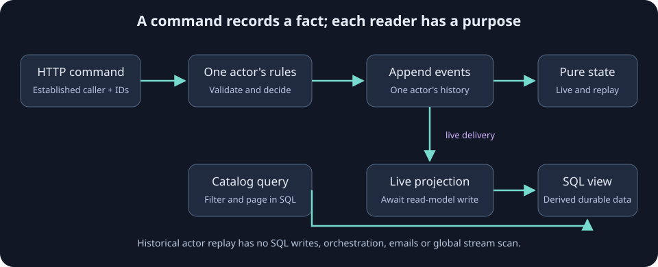

ToDo: actors, events and durable SQL reads
A beginner-friendly .NET 10 application using actual Troolio actors. Run the API, open its browser page, create a todo and complete it. Each todo owns an event stream. Live committed events update a SQLite read model through the EF projection extension. Queries read SQLite directly.
On this page
| Package | Used for |
|---|---|
Troolio.Core |
Typed event-sourced actors, metadata, hosting and development event stores |
Troolio.Projection.EntityFramework |
Awaited live relational projection operations |
Troolio.Stores.EventStore |
Optional gRPC event persistence with KurrentDB |
Microsoft.EntityFrameworkCore.Sqlite |
Durable local read-model database |
Microsoft.Orleans.Sdk |
Build-time message serialization and actor code generation |
Run without Docker
Install the .NET 10 SDK, then from the repository root:
dotnet run --project Sample/ToDo.EventStoreEfApi --urls http://localhost:5080
Open http://localhost:5080. wwwroot/index.html is the browser client. The default FileSystem event store writes to todo-events in the process working directory; SQLite writes todo-readmodels.db. Keep both directories/files to preserve state across restarts. These development defaults use one local Orleans silo, memory stream delivery and memory reminders. They are not a clustered production deployment.

Existing prototype data
This example replaces the old handwritten event bus. Its event shapes and SQLite owner column differ from the prototype. Preserve any useful prototype data separately and start this learning sample with a fresh event folder and read-model database. EnsureCreated creates a new demonstration schema; it does not migrate an existing database. A real application uses reviewed EF migrations and explicit event-schema evolution.
HTTP walkthrough
Create a todo. Supplying a stable ID makes retries safe; omitting it generates a new ID for each request.
curl http://localhost:5080/todos \
-H 'Content-Type: application/json' \
-H 'X-Correlation-Id: aaaaaaaa-aaaa-aaaa-aaaa-aaaaaaaaaaaa' \
-d '{"id":"22222222-2222-2222-2222-222222222222","title":"Learn event sourcing"}'
curl http://localhost:5080/todos/22222222-2222-2222-2222-222222222222
curl -X POST http://localhost:5080/todos/22222222-2222-2222-2222-222222222222/complete
curl http://localhost:5080/todos
| Request | Result |
|---|---|
| Create valid todo | 201 Created; same owner, ID and title retry emits no new event |
| Create same ID with another title | 409 Conflict |
| Empty/too long title or empty supplied ID | 400 Bad Request |
| Complete existing owned todo | 202 Accepted; repeated completion emits no new event |
| Complete missing todo | 404 Not Found |
| Complete another owner's todo | 403 Forbidden |
| Get missing/unowned todo | 404 Not Found |
| Get list | Caller-filtered SQL page; skip=0, take=50, maximum 100 |
GET /health |
Process readiness after silo and database startup |
The API awaits the actor command and event append. The memory stream delivers live projections asynchronously; the EF consumer awaits each SQLite write and propagates a failed write to its delivery pipeline. Queries can briefly return the previous read model. The browser refreshes until the change appears. This ordinary store/projection combination does not provide an atomic event-plus-read-model transaction or durable projection outbox. A production design needs explicit consumer recovery and projection repair; retain the read database on restart, and never silently rebuild it by scanning every stream at startup.
Understand the code
1. Commands express intent
TodoDomain.cs defines messages and their owning actor. Orleans serializer member IDs are explicit and stable; retain existing IDs when messages evolve.
[GenerateSerializer]
public sealed record CreateTodoCommand(Metadata Headers,
[property: Id(0)] Guid TodoId,
[property: Id(1)] string Title) : Command<ITodoActor>(Headers);
The API validates input before dispatch. The actor repeats domain validation because future callers may bypass HTTP. TodoId is the actor's key and the business retry key. A conflicting reuse of the key fails.
if (State.TodoId != Guid.Empty)
{
if (State.OwnerId != command.Headers.UserId)
throw new UnauthorizedAccessException();
if (State.Title != command.Title)
throw new InvalidOperationException("This ID already has a different title.");
return []; // The same business operation already succeeded.
}
2. Events describe what happened
The actor returns an event; Troolio appends it and applies it to actor state. Domain timestamps are captured when handling the command, then persisted in the event.
return [new TodoCreated(command.Headers, command.TodoId,
command.Headers.UserId, command.Title, DateTimeOffset.UtcNow)];
3. State replay is pure
TodoState.Apply restores state from recorded facts. Activation reads only the owning actor's stream. These reducers never write SQL, send a notification or execute another command.
public TodoState Apply(TodoCreated e) =>
new(e.TodoId, e.OwnerId, e.Title, false, e.CreatedAt, null);
public TodoState Apply(TodoCompleted e) =>
this with { IsCompleted = true, CompletedAt = e.CompletedAt };
public void On(TodoCreated e) => State = State.Apply(e);
public void On(TodoCompleted e) => State = State.Apply(e);
4. A live projection creates the query view
TodoProjection.cs subscribes to live TodoActor events. Its mappings create/update relational entities; the extension awaits persistence and propagates failures.
[ProjectionStreamSubscription(nameof(TodoActor))]
public sealed class TodoEfProjection
: EntityFrameworkBatchedProjection<TodoReadModel, TodoReadModelDbContext>,
ITodoEfProjection
{
public Task On(EventEnvelope<TodoCreated> e) => Create(e);
public Task On(EventEnvelope<TodoCompleted> e) => Update(e);
// SetupMappings defines the entity fields; see the complete source file.
}
EventEnvelope.Id is the source actor key. Stream plus Version locates the event in its source stream; it is not the same thing as a request or event message ID. The EF adapter's existing-key create handling is a basic duplicate safeguard, not a durable inbox for every possible operation.
5. Read SQL without waking every actor
List and detail endpoints query the durable model with the current server identity. A list never loads all todo streams. GET /todos?skip=0&take=50 reads a bounded SQL page; the maximum page size is 100. The SQLite mapping stores creation timestamps as UTC ticks so ordering stays inside the database.
var todos = await db.Todos.AsNoTracking()
.Where(x => x.OwnerId == identity.UserId)
.OrderByDescending(x => x.CreatedAt).ThenBy(x => x.Id)
.Skip(skip).Take(take).ToListAsync();
Identity and metadata
The sample has one server-configured demonstration identity, Todo:DemoUserId. Everyone using the local API acts as that user. It deliberately accepts no client X-User-Id authority. Replace DemoIdentity with a verified authenticated principal before exposing this application beyond local learning.
return new Metadata(correlationId, identity.UserId, Guid.Empty);
| Field | Meaning in this sample |
|---|---|
CorrelationId |
Diagnostic ID shared by a request flow; valid X-Correlation-Id is echoed in the response |
UserId |
Actor owner identity supplied by trusted server configuration |
DeviceId |
Guid.Empty; no verified device identity is available |
MessageId |
Troolio assigns runtime message identities; do not use it as the todo retry key |
CausationId |
Troolio stamps emitted events with the handled command's message ID |
TransactionId |
Framework metadata for the ordinary command flow; it does not imply an atomic SQLite transaction with the event store |
Change event storage
TodoRuntime.cs builds exactly one TroolioServer host and uses its actor system for API commands. The web host owns startup and shutdown. FileSystem is the default; InMemory is available only for temporary demonstrations and loses all events on restart.
For a local KurrentDB/EventStore-compatible gRPC endpoint, set:
Todo__EventStore=EventStore \
EventStore__ConnectionString='esdb://localhost:2113?tls=false' \
dotnet run --project Sample/ToDo.EventStoreEfApi --urls http://localhost:5080
The retained Troolio.Stores.EventStore package now uses gRPC rather than legacy TCP. Production endpoints require appropriate TLS and credentials, provided through your host configuration/secret manager.
services.AddSingleton(new KurrentDBClient(
KurrentDBClientSettings.Create(connectionString)));
// TodoRuntime selects TroolioServer<ESStore, JsonEventSerializer>(...).
Port defaults are 19220 (silo) and 19221 (gateway). Change Todo:SiloPort and Todo:GatewayPort to run another local instance. Each independent demonstration instance also needs its own event folder and SQLite database. Sharing FileSystemStore across processes is unsupported.
Explore the complete source
Open the ToDo application on GitHub. The source includes the domain, hosting setup, SQLite mapping, browser client and HTTP contract.
The sample consumes Troolio.Core 10.0.8, Troolio.Projection.EntityFramework 10.0.2 and Troolio.Stores.EventStore 10.0.2. See EF projections and ordinary gRPC event storage to use the extensions in your own application.